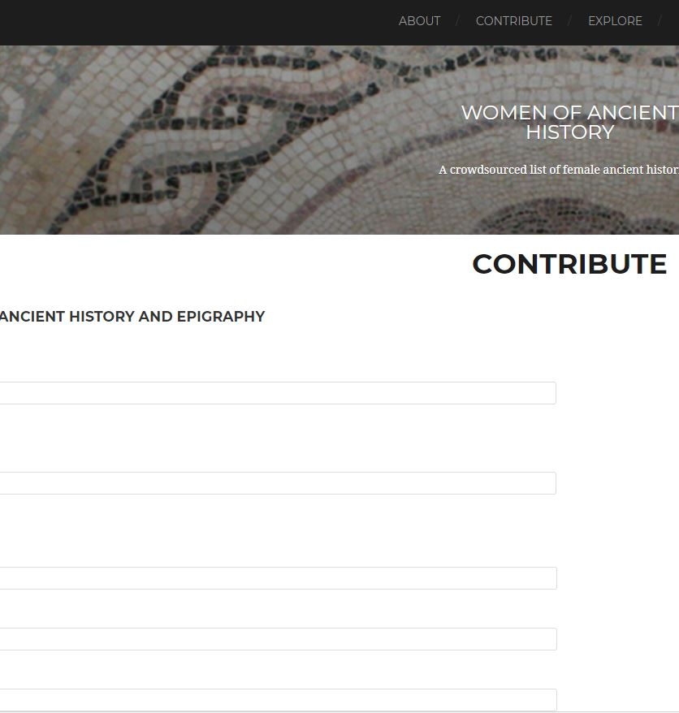

Summer 2018 Timeline
data and visualization milestones
-

January 11, 2016
The Blog Post
Read Sarah's description of why WOAH is necessary: The Decline and Fall of the All-Male Panel: Compiling a List of Female Ancient Historians
-

Weeks 1-2
Update, Clean and Collect Data
-Finding homes for Null Islanders
-Collecting Worldcat Identities Associated Subjects
-Steming and removing stop words from the Research Interests and Associated Subjects
-Building a network of scholars through links of shared interest words -

Weeks 3-5
Animated Doughnuts! and Learning to JSON
Starting from Bård Romstad's map of traffic accidents in Oslo, I used Gephi's clustering button to group entries to correspond to the colors. The biggest challenges centered on configuring the WOAH data to not return an error. I had a particularly hard time altering the metadata fields of the JSON.
-
Modularity
Gephi vs R
Exploration of differences between Gephi Louvain method and R. In short, R is more thorough.
-

Topic Models
Topic models to Networks
above needs explanation for definition of clusters as meaningful categories - why the machine sorting? TMs conversion to networks
-
Weeks 6-8
Did it all come together?
I am starting to write a lot of things down...
Special Thanks to the Digital Studio
especially

Nikki White
Fellowship Mentor

Alyssa Varner
Style and Color Guidance

Matthew Butler
WOAH Site Mechanics

Sarah E. Bond
Project Mission and Career Guidance
Dedicated to increasing visibility of non-male scholars who study ancient history.